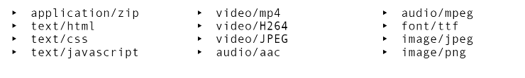

Hyperlinks são usados para você ir a um ponto a outro com apenas um clique. Para fazer hyperlinks, usamos primeiramente a tag de âncora, <a>. Nela temos o parâmetro principal, o href, nela colocamos o link desejado para o hyperlink. Clicando aqui, você vai para o site de cursos do Gustavo Guanabara
Também temos o parâmetro hreflang para definir a lingua do site do hyperlink
Com o parâmetro target na mesma tag de âncora, vai definir onde o hyperlink vai abrir. A seguir os valores deles
Os frames estão quase obsoletos, então o que mais usaremos é o _blank e _self
Clique aqui para ir no site de cursos do guanabara!
Com o atributo rel indicamos a origem do link
, com os valores a seguir:Clique aqui para ir para o exercicio anterior de html!
Para colocar um download no site é bem simples, colocando o parâmetro download na tag de âncora e então, definimos o tipo do arquivo a ser baixado no parâmetro type. A seguir alguns tipos bastante usados
